PYTHON
Premièrement pour faire fonctionner un programme python, il faut un environnement virtuel comme pycharm et l'interpreteur python pour lire le code.
Les variables :
Les variables sont un outil utilisé très régulièrement en programmation, elle permettent d'utiliser une même donnée à plusieurs endroits dans le programme et, si nécessaire, de modifier toutes ces données en une seule fois. Les variables permettent aussi de faire des opération sur des nombres :
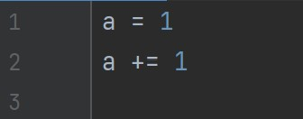Ici, je définis la variable "a" à 1 puis je l'incrémente de 1.
La fonction print :
La fonction print sert à afficher du texte dans l'environement virtuel, elle est utile pour débugger un programme en affichant la valeur de variables.
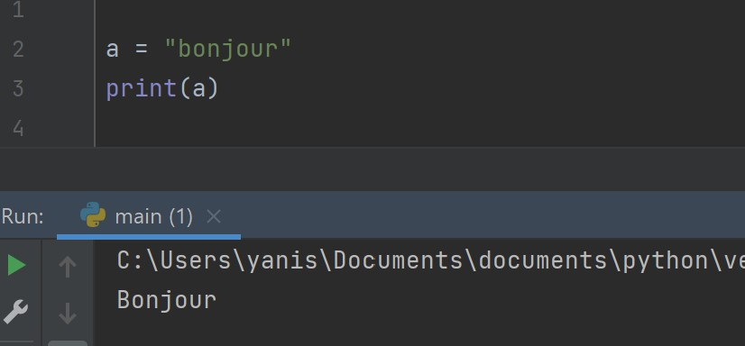La fonction input :
Ensuite, je vais parler de la fonction input, celle-ci sert à poser une question à l'utilisateur, c'est une fonction bloquante, elle stop le programme jusqu'à avoir une réponse. Et justement, les variables servent aussi à ça, récupérer et stocker le retour d'une fonction tel que input :
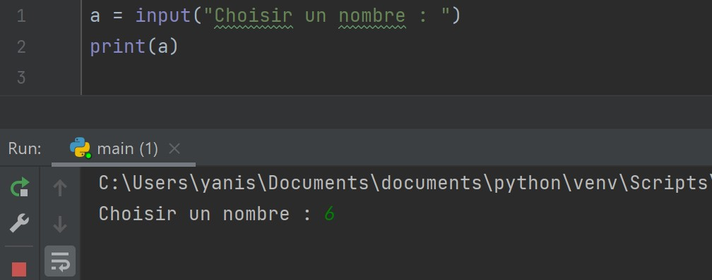Je rentre 6, la variable "a" stocke ma réponse.
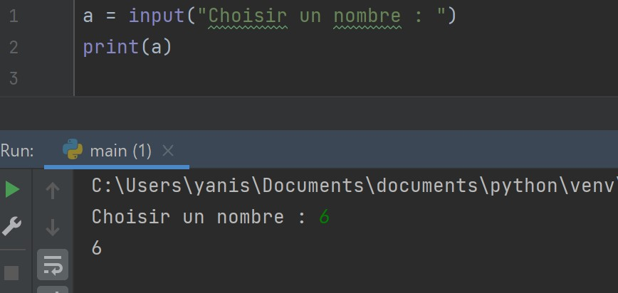Puis le programme affiche la valeur de "a".
Int et Str :
Ce sont les deux types principaux de données, int (abréviation de integer) est un nombre entier et str (abréviation de string) est un chaine de caractère. On peut passer d'un état à l'autre en utilisant ces deux fonctions.
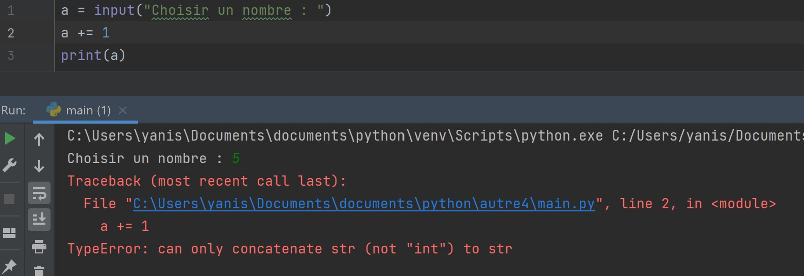Par exemple si on veut ajouter 1 au nombre entré, cette syntaxe ne fonctionnera pas car la réponse donnée à une fonction input est stockée en chaine de caractères, on ne peut donc pas ajouter 1 à une chaine de caractères.
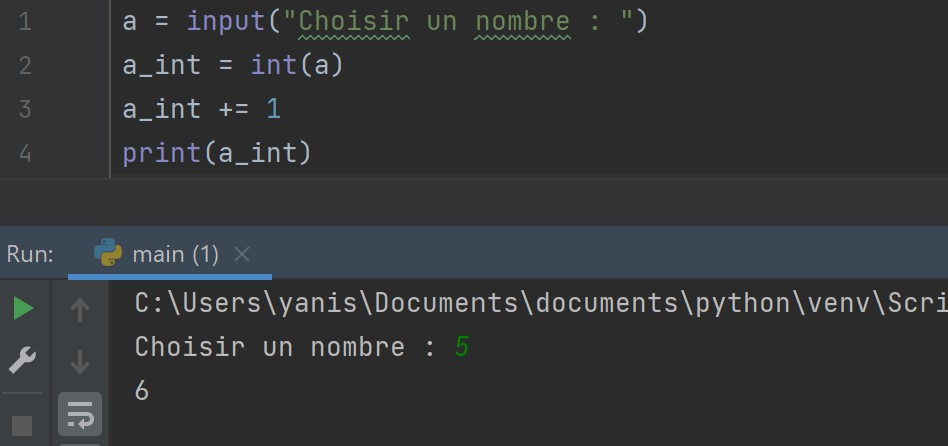Il faut donc passer par une conversion à l'aide de int.
Les boucles :
Il existe 2 types de boucles, les boucles while qui bouclent tant qu'une condition est remplie ou n'est pas remplie :
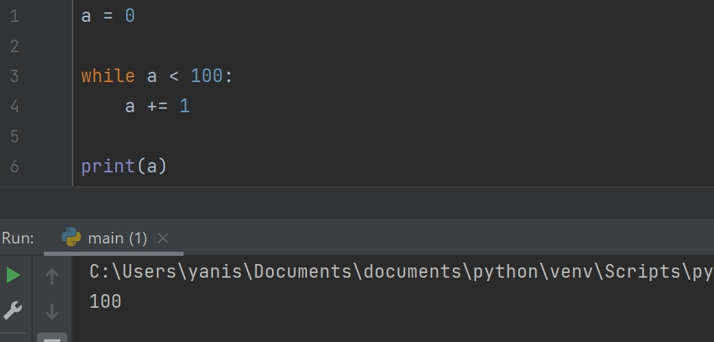Premièrement, on définit "a" sur 0, ensuite on crée un boucle while (pour mettre une instruction à l'intérieur d'une boucle, il faut utiliser un tab) qui s'éxécute tant que "a" est inférieur à 100 et une fois sorti de la boucle, on affiche "a".
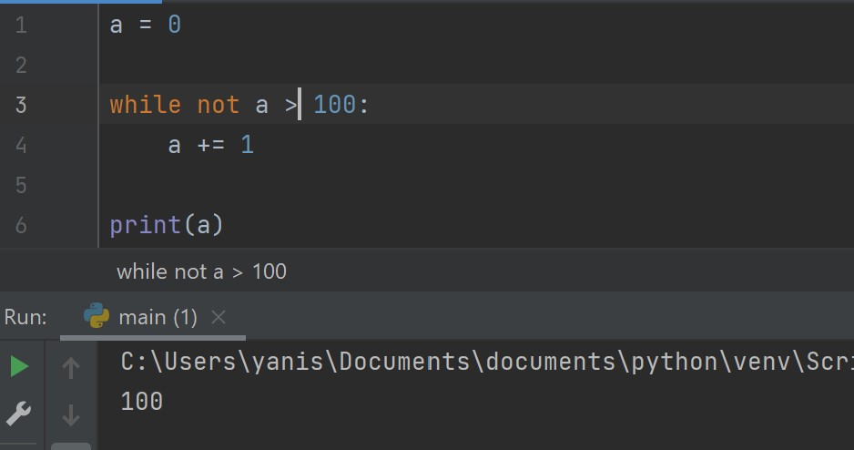Cela fonctionne de la même manière si on met not devant la condition et qu'on inverse le signe : la boucle while s'execute tant que a n'est pas supérieur à 100.
Il y a ensuite la boucle for qui répète un nombre de fois données des actions :
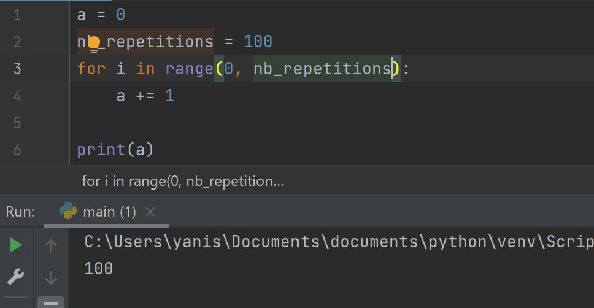Entre parenthèses dans la boucle, c'est le nombre de fois qu'il va faire les actions suivantes, ici il va répéter de 0 a nb_repetitions (exclu, c'est a dire que la boucle bouclera une fois de moins que nb_repetitions) soit 100 fois.
Les conditions :
Les conditions servent a éxécuter une action seulement si une condition est remplie ou n'est pas remplie :
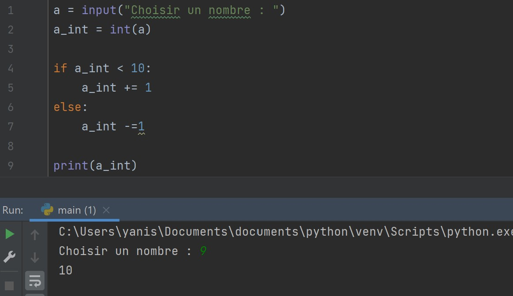Ici "a_int" est inférieur a 10 donc on lui ajoute 1.
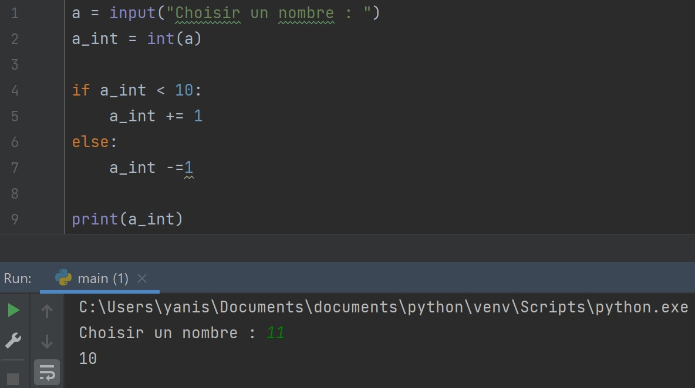Et sinon, on lui retire 1.
Merci d'avoir consulté mon site, c'est tout pour les bases de python !
Couleur de fond :
taille des images :